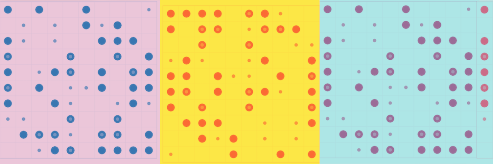

Box Handling Simulation
On this project I developed a robotic box handling simulation using the Python Mesa and Flask libraries. The simulation allowed us to model the movement of boxes and robots in a warehouse setting, and test various algorithms for optimizing the process. By using Mesa and Flask, I was able to create a highly interactive and effective simulation that could be easily adjusted and customized. Additionally, I used the power of Unity to create realistic multi-agent behavior, where robots interacted with each other and with the environment. Overall, the project was a great success and helped me gain valuable experience in the field of multi-agent modelling.